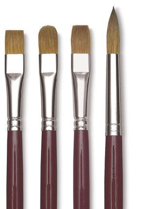
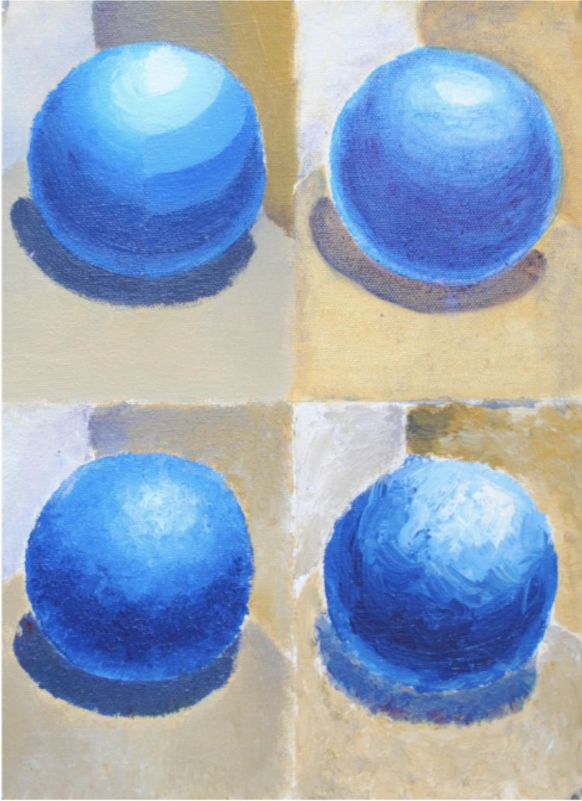
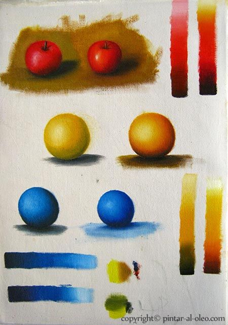
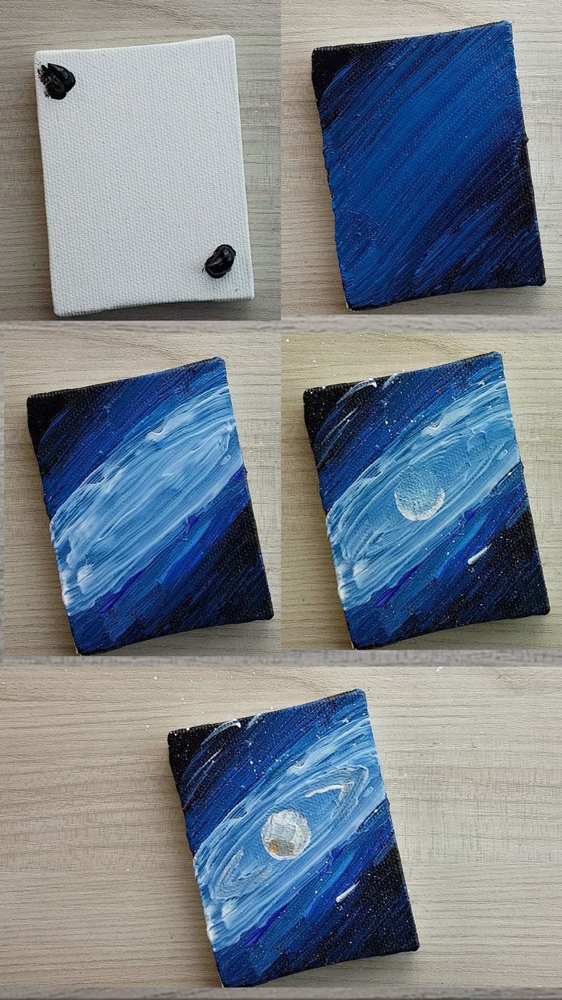
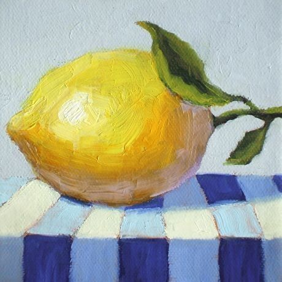

La pintura acrílica es una técnica versátil que utiliza pigmentos mezclados con un aglutinante acrílico. Permite trabajar sobre lienzo, madera, cartón y otras superficies. Es ideal para experimentar con capas, texturas y colores vivos, y se seca rápidamente, lo que permite corregir y superponer colores con facilidad.
Para empezar con acrílicos necesitas pinceles de diferentes tamaños y formas, pinturas acrílicas en tubos, paleta para mezclar colores, lienzo o papel especial para acrílico, agua para limpiar pinceles, y trapo o papel absorbente.
Practica cómo se comporta la pintura acrílica: líneas, trazos y rellenos con pincel seco o húmedo, mezcla de colores y degradados simples. Observa cómo se pueden superponer capas sin que se mezclen demasiado.
Empieza pintando formas simples como círculos, cuadrados o triángulos. Aprende a aplicar capas de color, desde la base hasta detalles finales, para controlar la saturación y la intensidad.
Experimenta con técnicas como pincel seco, espátula, salpicado y mezcla directa de colores sobre el lienzo. Los acrílicos permiten crear texturas interesantes y efectos de relieve.
Observa objetos reales y practica copiando colores, luces y sombras. Puedes pintar paisajes, flores o cualquier objeto sencillo, experimentando con capas y mezclas para mejorar tu técnica.
Para aplicar lo aprendido, realiza un ejercicio libre usando acrílicos: